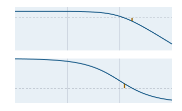

Control engineering and signal processing
Compute cores without a user interface for linear time-invariant systems: transfer functions with frequency response, margins and the Nyquist criterion, root locus, state space with discretisation and pole placement, PID with anti-windup, optimal control (LQR, Kalman), system identification, filter design and spectral analysis up to order analysis during run-up.

Uebertragungsfunktion.frequenzgang and reserven: open loop , gain margin 2, phase margin 27.1°.Principles of the module
EigenQr, discretisation via the matrix exponential, fitting with Levenberg-Marquardt, spectra with our own FFT.Transfer functions envisionz.regelung.lti
Numerator and denominator as polynomials; series, parallel, feedback, poles, frequency response with continuous phase, gain and phase margin, Nyquist encirclements of −1. Background, formulas and pseudocode →
Polynom, Uebertragungsfunktion
Polynomials with ascending coefficients (complex Horner, product, sum, derivative, roots). new Uebertragungsfunktion(zaehler, nenner); reihe, parallel, rueckfuehrung, pole, stabil, frequenzgang(ω) → {magnitude, dB, phase in degrees}, reserven(von, bis), nyquistUmlaeufe, instabileKreispole.
Example – margins of a control loop
Uebertragungsfunktion l = new Uebertragungsfunktion(new double[]{4}, new double[]{1, 3, 3, 1}); // 4/(s+1)^3
Uebertragungsfunktion.Reserven r = l.reserven(1e-2, 10);
// r.amplitudenreserve() = 2 at sqrt 3, r.phasenreserveGrad() = 27.1Root locus envisionz.regelung.lti
Closed-loop poles over the gain, asymptotes, breakaway points and critical gain. Background and formulas →
Wurzelortskurve
pole(G, K), asymptoten(G) → {centroid, angles …}, verzweigungen(G), kritisch(G, bis).
State space envisionz.regelung.lti
Controllable canonical form and back, zero-order hold via the matrix exponential, step response, controllability and observability, pole placement after Ackermann. Background and formulas →
Zustandsraum
ausUebertragung(G), uebertragung(), diskret(T) → (A_d, B_d, C, D), sprungantwort(T, n), steuerbarkeitsrang, beobachtbarkeitsrang, ackermann(poles).
PID controller envisionz.regelung.regler
Discrete PID with filtered derivative on the measurement, actuator limits with back-calculation against windup; tuning rules. Background, formulas and pseudocode →
Pid
Parameter(Kp, Ti, Td, N, u_min, u_max, Tt), new Pid(p, Ts), schritt(w, y) → u; zieglerNicholsSchwingung(Ku, Tu), sprungregel(K, Tu, Tg, chr).
Optimal control envisionz.regelung.regler
Algebraic Riccati equations, continuous (matrix sign function) and discrete (doubling, SDA); LQR, discrete LQR and steady-state Kalman filter. Background and formulas →
Optimal
care, dare, lqr, dlqr, kalman(A, C, Q, R) → {P, L}.
System identification envisionz.regelung.ident
ARX models by least squares with covariance; first-order lag with dead time from a step response. Background, formulas and pseudocode →
Identifikation
arx(u, y, na, nb, nk) → parameters, loss, covariance; pt1tt(t, y) → K, T, T_t.
Filter design envisionz.regelung.filter
Butterworth and Chebyshev I via the prewarped bilinear transform, FIR by the window method, filtering in transposed direct form II, zero-phase forward and backward. Background, formulas and pseudocode →
Filterentwurf
butterworth(n, Wn, hochpass), tschebyscheff1(n, rp, Wn, hochpass), fir(length, Wn, window, β, hochpass), betrag, filtere, anfangszustand, nullphasig. relative to half the sampling frequency.
Spectral analysis envisionz.regelung.spektrum
Power spectral density after Welch, spectrogram, order analysis by resampling over the shaft angle. Background and formulas →
Spektrum
welch(x, fs, segment) → frequencies and density, spektrogramm(x, fs, segment, hop), ordnungen(x, fs, speed, perRevolution).
How it is checked
| Probe | Checks | Anchors |
|---|---|---|
Ltiprobe | 13 | combinations by hand, continuous phase down to −267°, margins of in closed form (1e-9), Nyquist against the closed-loop poles, root locus of , canonical form there and back, zero-order hold on the double integrator, ranks, Ackermann (also by hand), stability on the axis, copies of the matrices |
Reglerprobe | 9 | steady-state error , no derivative kick, one integral step by hand, anti-windup, tuning rules; scalar Riccati equations in closed form, double integrator , residual on a four-state system, derivative part on a ramp in closed form, dlqr against the iterated Riccati difference equation |
Identprobe | 4 | ARX exact without noise, with noise within three standard errors and covariance against 100 repetitions, first-order lag with dead time to 1e-6 |
Filterprobe | 7 | Butterworth against published coefficients (5e-9), Chebyshev equiripple, FIR by hand, filtering equal to convolution, zero-phase without shift, Kaiser FIR against reference values (1e-14), Chebyshev high-pass |
Spektrumprobe | 5 | Parseval for Welch, chirp in the spectrogram, run-up with order lines, error cases, order at half the sampling rate |
Limits
- Transfer functions and root locus for single-input single-output systems; multivariable systems via state space and the Riccati solvers.
- No dead time in transfer functions (only in the identification of the first-order lag).
- Filters: Butterworth, Chebyshev I and FIR; no elliptic filters, no band-pass.